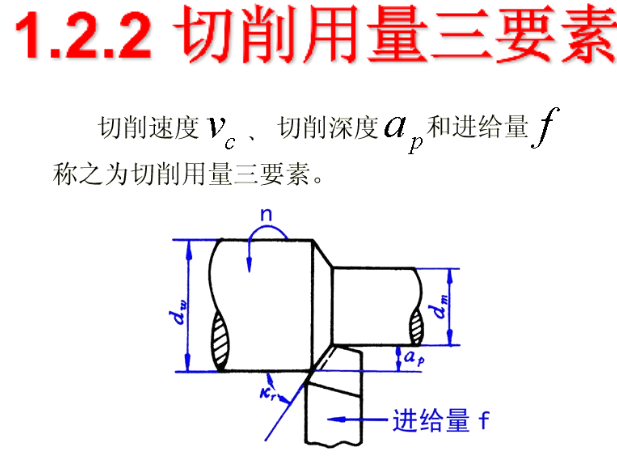
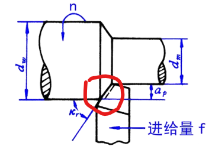
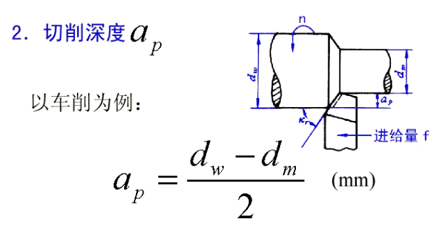
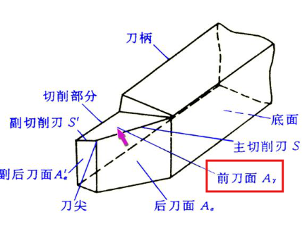

2.3 金属切屑
1.2 加工表面三要素
主运动
刀具切屑的运动
进给运动
相对移动方向来完成切屑运动
切屑参数
切屑速度 vc、切屑深度 ap、进给量 f

切屑速度 vc
定义： 切屑刀刃上速度最大的点（外径最大的地方）

备注： dw、dm 单位都是 mm
公式：
vc = π × d × n / 1000 （单位：m/s 或 m/min）
切屑深度 ap

进给量 f
定义： 进给量 f = 回转一圈，刀具所进给的相对位移（mm）
公式：
vf = f × n （单位：m/s 或 m/min）
每齿进给量（z 齿）
vf = fz × z × n
每齿 = 转 1/z 圈（进 1 个齿）
效率（三要素乘积）
三要素乘积 = 梯形面积 × 切屑速度 = 体积

1.3 刀具角度参数
分类： 直角切屑、斜角切屑

刀具结构组成
- 前刀面 Aγ：刀具切屑流过的面
- 后刀面 Aα：相对于加工面的斜面
- 副后刀面 Aα'：后刀面隔壁
三面两刃一刀 = 刀尖